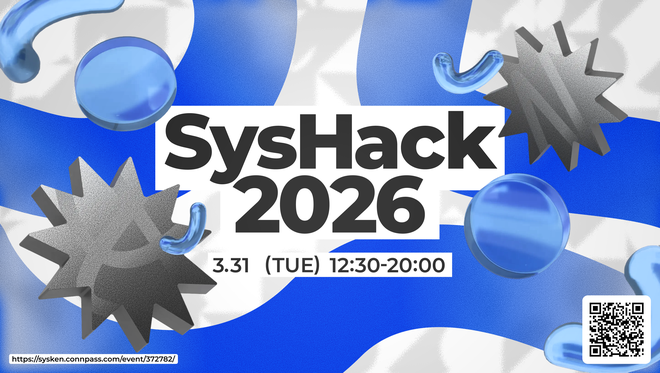
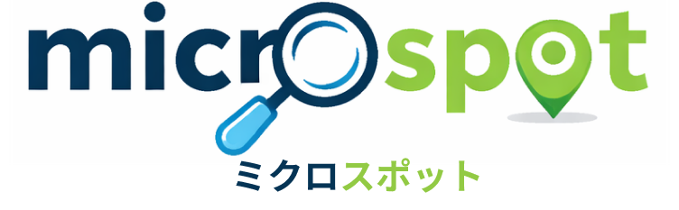

タイトル:microspot
開発期間：2026年3月24-3月31日
開発人数:3人
開発言語:Typescript(Reactのコンポーネントベースでの開発)
開発背景:全員の趣味が旅行であり、何回も行くとその地域に対する感動が薄れてしまうことを回避するために作りました。
概要：その地域の知られざる魅力を知ってもらうために開発しました。ログインすることで自分が登録したスポットや、ほかの人が登録した地域に自分が言った場合、行ったかを記録できます。
開発背景:全員の趣味が旅行であり、何回も行くとその地域に対する感動が薄れてしまうことを回避するために作りました。
開発秘話:私たち全員個人参加で結成されたチームで、なかなか予定が合わず苦労することが多々ありました。得意とする言語も異なるため各自Reactについて勉強してからこれを開発しました。

microspotにアクセス